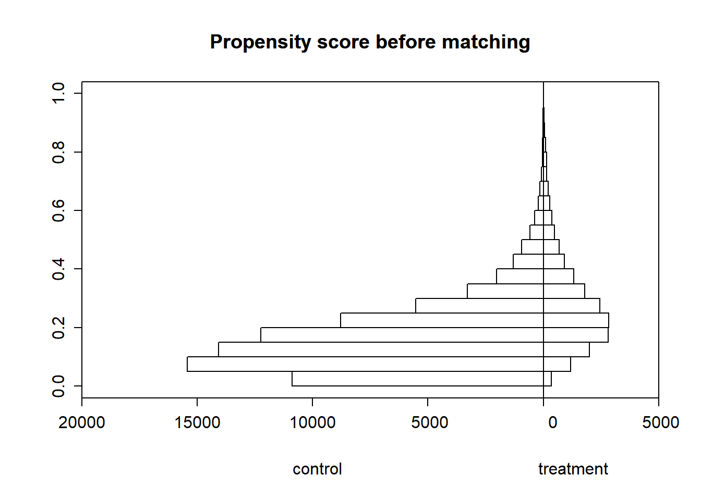
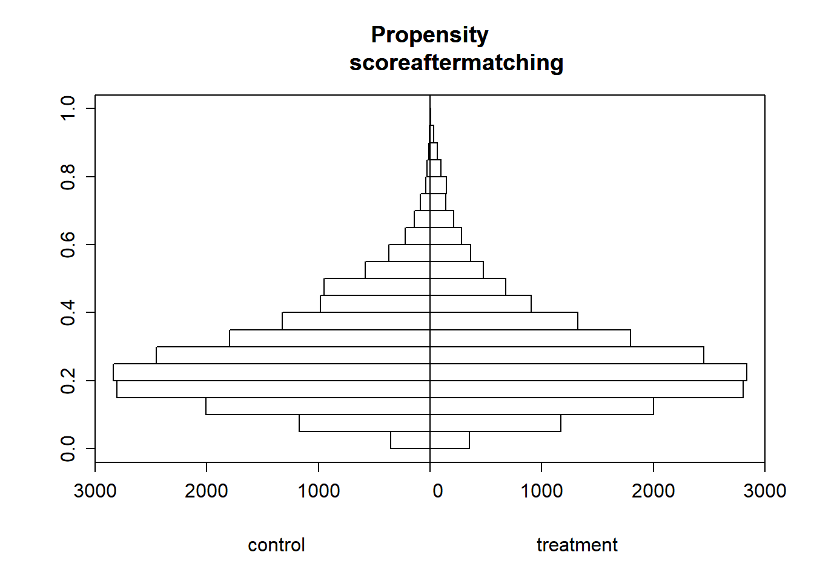

# Load data for Part
smoking_data <- read_csv(here("featured_projects/econometrics/data/SMOKING_EDS241.csv"))Applied Statistics for Social Sciences: How incentivizing household failed?
Statistics
Econometrics
Causal Inference
R
The goal is to estimate the causal effect of maternal smoking during pregnancy on infant birth weight using the treatment ignorability assumptions. The data are taken from the National Natality Detail Files, and the extract “SMOKING_EDS241.csv”’ is a random sample of all births in Pennsylvania during 1989-1991. Each observation is a mother-infant pair. The key variables are:
The outcome and treatment variables are:
birthwgt=birth weight of infant in grams
tobacco=indicator for maternal smoking
The control variables are:
mage (mother’s age), meduc (mother’s education), mblack (=1 if mother identifies as Black), alcohol (=1 if consumed alcohol during pregnancy), first (=1 if first child), diabete (=1 if mother diabetic), anemia (=1 if mother anemic)
Part 1 Treatment Ignorability Assumption and Applying Matching Estimators
Mean Differences, Assumptions, and Covariates
## Calculate mean difference. Remember to calculate a measure of statistical significance
## calculating difference using t.test when tobacco is 1 and 0
smoking_mothers = smoking_data %>% filter(tobacco == 1)
non_smoking_mothers = smoking_data %>% filter(tobacco == 0)
#peform t-test to see if the difference is significant in other covariates
t.test(smoking_mothers$birthwgt, non_smoking_mothers$birthwgt)
Welch Two Sample t-test
data: smoking_mothers$birthwgt and non_smoking_mothers$birthwgt
t = -58.932, df = 26945, p-value < 2.2e-16
alternative hypothesis: true difference in means is not equal to 0
95 percent confidence interval:
-252.6727 -236.4060
sample estimates:
mean of x mean of y
3185.747 3430.286 The mean difference is 244.539 grams between child from smoker and non smoker mothers, which is significant at 5% confidence.The assumptions for this mean difference to hold is ignorability (no other confounding variables that is influencing the outcome) and common support( there is sufficient overlap between treatment and control group. I mean the units in both treatment and control group are similar which means units being compared is similar.
Creating sets of coefficents to explain the weights of each covariates for this outcome
#set options to have maximum 5 decimal
options(digits=5)
## For continuous variables you can use the t-test
#t.test()
education <- t.test(smoking_mothers$meduc, non_smoking_mothers$meduc)
age <- t.test(smoking_mothers$mage, non_smoking_mothers$mage)
birthwht <- t.test(smoking_mothers$birthwgt, non_smoking_mothers$birthwgt)
## For binary variables you should use the proportions test
#prop.test()
alcohol <- prop.test(table(smoking_mothers$alcohol), table(non_smoking_mothers$alcohol))
first_child <-prop.test(table(smoking_mothers$first), table(non_smoking_mothers$first))
diabetes<- prop.test(table(smoking_mothers$diabete), table(non_smoking_mothers$diabete))
anaemia <- prop.test(table(smoking_mothers$anemia), table(non_smoking_mothers$anemia))
black <- prop.test(table(smoking_mothers$mblack), table(non_smoking_mothers$mblack))
## Covariate Calculations and Tables (feel free to use code from Assignment 1 key)
# create dataframe of coefficents from above results including
# first column should be variable name, then mean of estimate for sample 1, then
# mean of sample 2, then p values
table <- data.frame(
variable = c("birthweight", "education", "age", "alcohol", "first_child", "diabetes", "anaemia", "black"),
smoking_mothers = c(birthwht$estimate[1], education$estimate[1], age$estimate[1],
sum(smoking_mothers$alcohol)/length(smoking_mothers$alcohol),
sum(smoking_mothers$first)/length(smoking_mothers$first),
sum(smoking_mothers$diabete)/length(smoking_mothers$diabete),
sum(smoking_mothers$anemia)/length(smoking_mothers$anemia),
sum(smoking_mothers$mblack)/length(smoking_mothers$mblack)),
non_smoking_mothers = c(birthwht$estimate[2], education$estimate[2], age$estimate[2],
sum(non_smoking_mothers$alcohol)/length(non_smoking_mothers$alcohol),
sum(non_smoking_mothers$first)/length(non_smoking_mothers$first),
sum(non_smoking_mothers$diabete)/length(non_smoking_mothers$diabete),
sum(non_smoking_mothers$anemia)/length(non_smoking_mothers$anemia),
sum(non_smoking_mothers$mblack)/length(non_smoking_mothers$mblack)),
p_value = round(c(birthwht$p.value,
education$p.value,
age$p.value,
alcohol$p.value,
first_child$p.value,
diabetes$p.value,
anaemia$p.value,
black$p.value), 6))
print(table) variable smoking_mothers non_smoking_mothers p_value
1 birthweight 3.1857e+03 3.4303e+03 0
2 education 1.1921e+01 1.3239e+01 0
3 age 2.5539e+01 2.7453e+01 0
4 alcohol 4.4182e-02 7.1033e-03 0
5 first_child 3.6459e-01 4.3609e-01 0
6 diabetes 1.7519e-02 1.7364e-02 0
7 anaemia 1.4103e-02 7.8005e-03 0
8 black 1.3541e-01 1.0863e-01 0For all other covariates, there is significant difference between the treatment and control groups under 5% confidence interval. The p value is extremely low that it rounds to zero even at rounding at 6 decimal places. This suggests that the assumptions, Common Support, is not satisfied. There isn’t sufficient overlap between treatment and control group, which means smoking mothers and non smoking mothers already represent disimilar population. Regardding ignorability assumption, we cannot yet make inference from t-test. The part b, where ATE will be used, will help us test the ignorability assumption.
ATE and Covariate Balance
# ATE Regression univariate
tobacco_univariate <- lm(birthwgt ~ tobacco, data = smoking_data)
# ATE with covariates
tobacco_covariates <- lm(birthwgt ~ tobacco + mage + meduc +
mblack + alcohol + first + diabete + anemia, data = smoking_data)
## create combined table
stargazer(tobacco_univariate, tobacco_covariates, type = "text",
out.header = TRUE,
title = "Regression with and without controls",
notes.label = "significance level")
Regression with and without controls
===========================================================================
Dependent variable:
-------------------------------------------------------
birthwgt
(1) (2)
---------------------------------------------------------------------------
tobacco -244.540*** -228.070***
(4.079) (4.177)
mage -0.694*
(0.357)
meduc 11.688***
(0.860)
mblack -240.030***
(5.106)
alcohol -77.350***
(13.465)
first -96.944***
(3.447)
diabete 73.228***
(12.104)
anemia -4.796
(16.754)
Constant 3,430.300*** 3,362.300***
(1.791) (11.927)
---------------------------------------------------------------------------
Observations 94,173 94,173
R2 0.037 0.072
Adjusted R2 0.037 0.072
Residual Std. Error 493.750 (df = 94171) 484.730 (df = 94164)
F Statistic 3,594.300*** (df = 1; 94171) 909.180*** (df = 8; 94164)
===========================================================================
significance level *p<0.1; **p<0.05; ***p<0.01Based on the regression output, the base weight of child born from control population(non smoking mothers) is 3430.300 gram on average. But, for the treatment population who are smoking mothers, the base weight of child born from them has lower weight by 244 grams on average. In other words, there is an average lower weight of child born from smoking mothers. This finding is statistically significant as evident by p values, which is much less than 0.05. However, only 3% of variation in birthweight is explained by the model, given by R squared value of 0.03.
# perform balance test
x <- xBalance(tobacco ~ mage + meduc + mblack + alcohol + first + diabete + anemia + birthwgt, data = smoking_data,
report=c("std.diffs","chisquare.test", "p.values"))
#use staragazer to present the results
as.data.frame(x[1]) %>%
#round last column to 5 digit
mutate_if(is.numeric, round, 5) %>%
#rename columns based on number index
setNames(c( "chi-Square/standard difference test", "p-value")) chi-Square/standard difference test p-value
mage -0.36194 0.0000
meduc -0.64374 0.0000
mblack 0.08439 0.0000
alcohol 0.31525 0.0000
first -0.14500 0.0000
diabete 0.00119 0.8858
anemia 0.06670 0.0000
birthwgt -0.49527 0.0000Based on the outputs above, several covariates, except the presence of diabetes in mothers, shows statistically significant relationships with birthweight, having p values close to zero. This means our assumption of ignorability for this observational studies is violated and not fulfilled becuase there are several confounders that is significantly influencing the outcome. So we can’t make casual inference that tobacco has caused lower birth weights in smoker mothers.
Propensity Score Estimation
## Propensity Scores estimation with logistic regression
mother_prospensityscore <- glm(tobacco ~ mage + meduc +
mblack + alcohol + first + diabete + anemia + birthwgt, data = smoking_data,
family = binomial())
## create a table of coefficients
stargazer:: stargazer(mother_prospensityscore, type = "text")
=============================================
Dependent variable:
---------------------------
tobacco
---------------------------------------------
mage -0.040***
(0.002)
meduc -0.288***
(0.005)
mblack -0.361***
(0.028)
alcohol 1.962***
(0.062)
first -0.460***
(0.020)
diabete 0.229***
(0.067)
anemia 0.333***
(0.081)
birthwgt -0.001***
(0.00002)
Constant 6.456***
(0.090)
---------------------------------------------
Observations 94,173
Log Likelihood -40,841.000
Akaike Inf. Crit. 81,699.000
=============================================
Note: *p<0.1; **p<0.05; ***p<0.01#create regression table dataframe based on mother_prospensityscore
# Assuming you have a regression model object named 'model'
# You would need to replace 'model' with the actual name of your model object
model = mother_prospensityscore
# Extract coefficients, standard errors, and p-values from the model
coefficients <- coef(model)
standard_errors <- sqrt(diag(vcov(model)))
p_values <- summary(model)$coefficients[, 4] # Extracting p-values
# Define function to determine significance level
get_significance_level <- function(p_value) {
if (p_value < 0.01) {
return('***')
} else if (p_value < 0.05) {
return('**')
} else if (p_value < 0.1) {
return('*')
} else {
return('')
}
}
# Get significance levels
significance_levels <- sapply(p_values, get_significance_level)
# Create dataframe
df <- data.frame(
Coefficient = coefficients,
Standard_error = round(standard_errors, 3),
Significance_level = significance_levels
)
# Print the dataframe
print(df) Coefficient Standard_error Significance_level
(Intercept) 6.45614093 0.090 ***
mage -0.04012754 0.002 ***
meduc -0.28772570 0.005 ***
mblack -0.36100043 0.028 ***
alcohol 1.96216177 0.062 ***
first -0.45972476 0.020 ***
diabete 0.22927944 0.067 ***
anemia 0.33284394 0.081 ***
birthwgt -0.00091614 0.000 ***The covariates coefficients are strengths/weights of each variables that determines whether a unit will recieve the treatment. For example, the coefficient of mother’s age is 0.04, which means that for every unit increase in mother’s age, keeping all other covariates constant, the log odds of being in treatment group decreases by 0.02.This is statistically significant as evident by p value, which is much less than 0.05. All covariates in the model are significant which means they are all important in determining the treatment status for a unit X.
Among all covariates, alchol has the greatest influence on whether a unit will recieve treatment, followed by first born child, which negative influence in being treatment group. These coefficients are all significant at 5% significance level.
## use this logistic model to create a new column of prospensity scores for each observation
smoking_data$prospensity_scores <- predict(mother_prospensityscore, type = "response")
#round the scores to 2 decimal places
smoking_data$prospensity_scores <- round(smoking_data$prospensity_scores, 2)
## Histogram of PS before matching
histbackback(split(smoking_data$prospensity_scores, smoking_data$tobacco),
main= "Propensity score before matching",
xlab=c("control", "treatment"))
Overlap and its meaning Overlap refers to the degree of similarity or commonality between the treatment group (those who received the treatment being studied) and the control group (those who did not receive the treatment). The overlap is important because it is a necessary condition for the ignorability assumption to hold. If there is no overlap, then the treatment and control groups are so different that it is impossible to make causal inferences. The histogram above shows that there is a only some overlap between the treatment and control group, more individuals in the control group with lower propensity scores than in the treatment group. This is a violation of the Common Support assumption.
Matching Balance
Next, match treated/control mothers using your estimated propensity scores and nearest neighbor matching. Compare the balancing of pretreatment characteristics (covariates) between treated and non-treated units in the original dataset (from c) with the matched dataset (think about comparing histograms/regressions).
## Nearest-neighbor Matching
prospensity_score_matched <- MatchIt::matchit(tobacco ~ mage + meduc +
mblack + alcohol + first + diabete + anemia + birthwgt, data = smoking_data, method = "nearest")
## Covariate Imbalance post matching
matched_prospensity_dataset <- match.data(prospensity_score_matched)
# Drawing back to back histograms for propensity scores for treated and
# non-treated after matching
histbackback(split(matched_prospensity_dataset$prospensity_scores, matched_prospensity_dataset$tobacco), main= "Propensity
score after matching", xlab=c("control", "treatment"))
Post matching, there is a better overlap between the treatment and control group. Units with high propensity score is matched with its counterparts and vice versa. This means the units we are comparing between the treatment and control group are similar. This helps us define counterfactuals of what would have happened to the treatment group if they were not treated.
# the covariates between treated and non-treated that were used in the
# estimation of the propensity scores
xBalance(tobacco ~ mage + meduc + mblack + alcohol + first + diabete + anemia + birthwgt, data = matched_prospensity_dataset,
report=c("std.diffs","chisquare.test", "p.values")) strata(): unstrat
stat std.diff
vars
mage 0.0 ***
meduc 0.0 ***
mblack 0.0 **
alcohol 0.1 ***
first 0.0 ***
diabete 0.0 .
anemia 0.0
birthwgt 0.0 *
---Overall Test---
chisquare df p.value
unstrat 175 8 1e-33
---
Signif. codes: 0 '***' 0.001 '** ' 0.01 '* ' 0.05 '. ' 0.1 ' ' 1 xBalance(tobacco ~ mage + meduc + mblack + alcohol + first + diabete + anemia + birthwgt, data = smoking_data,
report=c("std.diffs","chisquare.test", "p.values")) strata(): unstrat
stat std.diff
vars
mage -0.4 ***
meduc -0.6 ***
mblack 0.1 ***
alcohol 0.3 ***
first -0.1 ***
diabete 0.0
anemia 0.1 ***
birthwgt -0.5 ***
---Overall Test---
chisquare df p.value
unstrat 10298 8 0
---
Signif. codes: 0 '***' 0.001 '** ' 0.01 '* ' 0.05 '. ' 0.1 ' ' 1 After the matching, the nature and weight of the regression coefficients changed. Previously in unmatched data, I discussed that with increase age of mother, propensity score decreases. But post matching, the coefficients is showing that propensity score actually increases with increasing age of the mother. This is a sign that matching have accounted fixed effects in the observational dataset. Moreover, some covariates which were significant in determining the treatement status in the pre matching, are not significant anymore post matching. Like diabete, anemia, birthwgt, and mblack. Thus mother being black, having diabetes, and having anaemia, does not determine if she will receive the treatment or not.
ATE with Nearest Neighbor
Estimate the ATT using the matched dataset.
## calculate ATE based on nearest neighbor matching
sumdiff_data <- matched_prospensity_dataset%>%
group_by(subclass)%>%
mutate(diff = birthwgt[tobacco==1]- birthwgt[tobacco==0])
dif_in_treated <- sum(sumdiff_data$diff)/2
ATT_weighted_count = 1/sum(matched_prospensity_dataset$tobacco) * dif_in_treated
ATT_weighted_count[1] -13.361For the treated smoker mothers, the tobacco effects on their child birth weight is lower by 13 grams on average than for its counterfactual non smoking mothers. This means that the treatment has caused lower birth weight in the treated group of mothers. For any other units of population who shares similar covariates as treated group, the birth weight of their child will be lower by 13 grams on average if they were to start smoking tobacco.
ATE with WLS Matching
## Weighted least Squares (WLS) estimator Preparation
smoking_data <- smoking_data %>%
mutate(weights = tobacco / prospensity_scores + (1 - tobacco) / (1 - prospensity_scores))
## Weighted least Squares (WLS) Estimates
wls <- lm(birthwgt ~ tobacco + mage + meduc +
mblack + alcohol + first + diabete + anemia,
data = smoking_data, weights = weights)
summary(wls)
Call:
lm(formula = birthwgt ~ tobacco + mage + meduc + mblack + alcohol +
first + diabete + anemia, data = smoking_data, weights = weights)
Weighted Residuals:
Min 1Q Median 3Q Max
-7283 -374 32 396 12243
Coefficients:
Estimate Std. Error t value Pr(>|t|)
(Intercept) 3122.734 11.584 269.58 < 2e-16 ***
tobacco 1.426 3.241 0.44 0.66
mage 0.219 0.358 0.61 0.54
meduc 23.497 0.881 26.69 < 2e-16 ***
mblack -215.695 4.978 -43.33 < 2e-16 ***
alcohol -174.499 13.803 -12.64 < 2e-16 ***
first -65.326 3.509 -18.61 < 2e-16 ***
diabete 72.223 12.213 5.91 3.4e-09 ***
anemia -23.746 16.766 -1.42 0.16
---
Signif. codes: 0 '***' 0.001 '**' 0.01 '*' 0.05 '.' 0.1 ' ' 1
Residual standard error: 698 on 94163 degrees of freedom
(1 observation deleted due to missingness)
Multiple R-squared: 0.0369, Adjusted R-squared: 0.0368
F-statistic: 451 on 8 and 94163 DF, p-value: <2e-16## Present resultsThe WLS matching is weighted based on propensity scores, meaning unit with higher similarity in covariates gets more weights. Based on this matching, the average birth weight of children for non smoker mother or control group is 3122.7338, keeping all other variables unchanged. This is statistically significant at 5% signficance. Of all the covariates, mblack covariates has greatest influence in outcome. i.e If the women identifies as black, the birth weight of the child is lower by 241 grams, which is significant. Besides, other covariates like drinking alcohol, first born child, and diabetes in covariates also significantly influence birthweight. However, tobacco appears insignificant at 5 percent signficance level. The model only explains 3 percent of variation given by R squared in birth weight of children. This means that the model is not a good fit for the data.
Differences in Estimates
There are certain factors that influences the output more than other covariates. This was also shown by the coefficients in Balance estimates in previous step. When using ATT with propensity score matching, the model assumed that all covariates has equal influence in determining the treatment status. But in reality, this is not always true. The WLS matching takes weights of each covariates into account, thus providing different output than ATT. if all the covariates had same weights, we would have got same estimate using both ATT and WLS matching.
Part 2 Panel model and fixed effects
Estimating Effect with First Difference
Working with new sets of data:
## Load the datasets
progresa_pre_1997 <- read_csv(here("featured_projects/econometrics/data/progresa_pre_1997.csv"))
progresa_post_1999 <- read.csv(here("featured_projects/econometrics/data/progresa_post_1999.csv"))
## Append post to pre dataset
progresa <- rbind(progresa_pre_1997, progresa_post_1999)Estimate a first-difference (FD) regression manually, interpret the results briefly (size of coefficient and precision!) *Note: Calculate the difference between pre- and post- program outcomes for each family.
### Code included to help get you started
## i. Sort the panel data in the order in which you want to take differences, i.e. by household and time.
## Create first differences of variables
progresa_difference <- progresa %>%
arrange(hhid, year) %>%
group_by(hhid) %>%
## ii. Calculate the first difference using the lag function from the dplyr package.
mutate(vani_fd = vani - dplyr::lag(vani))
## iii. Estimate manual first-difference regression (Estimate the regression using the newly created variables)
first_difference_manual <- lm(vani_fd ~ treatment,
data = progresa_difference)
# Calculate standard errors
se_fdman <- coeftest(first_difference_manual, vcov = vcovHC(first_difference_manual, type = "HC2", method="white1"))[, "Std. Error"]
# Reformat standard errors for stargazer()
se_fdman <- list(se_fdman)
# Output results with stargazer
stargazer(first_difference_manual, keep=c("treatment"), se = se_fdman, type="text")
===============================================
Dependent variable:
---------------------------
vani_fd
-----------------------------------------------
treatment 287.900***
(86.805)
-----------------------------------------------
Observations 13,514
R2 0.001
Adjusted R2 0.001
Residual Std. Error 4,929.900 (df = 13512)
F Statistic 11.312*** (df = 1; 13512)
===============================================
Note: *p<0.1; **p<0.05; ***p<0.01First Difference regression estimate tells that there is an average of 287.905 increase in animal holdings in treated households. This is statistically significant at 5% significance level, and standards errors at 86.805, which is also significant. When the estimate was calculated without calculating the first difference, the estimate had shown decreased in animal holding. This change in estimate values infers that there is unseen omitted variable that has constant effect on animal holdings which FD accounted. However, the model only explains 0.1% of all variations that is observed in animal holding, meanings there are unseen omitted variables.
Fixed Effects Estimates
Now also run a fixed effects (FE or ‘within’) regression and compare the results. Interpret the estimated treatment effects briefly (size of coefficient and precision!)
## Fixed Effects Regression
library(pglm)
fixed_effects <- plm::plm(vani ~ treatment,
index = c("state", "year"),
model = "within",
effect = "twoways",
data = progresa)
# Calculate standard errors (note slightly different procedure with plm package)
se_fixed_effect <- coeftest(fixed_effects, vcov = vcovHC(fixed_effects, type = "HC2", method="white1"))[, "Std. Error"]
# Reformat standard errors for stargazer()
se_within1 <- list(se_fixed_effect)
#use kable to create table of estimates and all
summary(fixed_effects)Twoways effects Within Model
Call:
plm::plm(formula = vani ~ treatment, data = progresa, effect = "twoways",
model = "within", index = c("state", "year"))
Balanced Panel: n = 7, T = 2, N = 27996
Residuals:
Min. 1st Qu. Median 3rd Qu. Max.
-4958 -2013 -1074 151 79340
Coefficients:
Estimate Std. Error t-value Pr(>|t|)
treatment -231.8 55.9 -4.15 3.4e-05 ***
---
Signif. codes: 0 '***' 0.001 '**' 0.01 '*' 0.05 '.' 0.1 ' ' 1
Total Sum of Squares: 5.86e+11
Residual Sum of Squares: 5.85e+11
R-Squared: 0.000614
Adj. R-Squared: 0.000329
F-statistic: 17.2057 on 1 and 27987 DF, p-value: 3.36e-05The Fixed Effects(FE) estimates tells that the average animal holding increased by 231.84 animals between 1997 and 1999 in treated states. This is significant at 5% confidence. However, the model explains only 0.6% variation observed in the animal holding, with standard error 56.66, which is calculated manually for grouped units in FE.
Unlike first difference (FD) that compares nearest units to estimate the relation, the fixed effects(FE) looks at the average across time and space. Since there are only two time periods, the average estimate from fixed effect are going to be similar to regression estimate from first difference.
First Difference and Fixed Effects and Omitted Variable Problems
Explain briefly how the FD and FE estimator solves a specific omitted variable problem? Look at the example on beer tax and traffic fatalities from class to start thinking about ommitted variables. Give an example of a potential omitted variable for the example we are working with here that might confound our results? For that omitted variable, is a FE or FD estimator better? One example is enough.
The FD and FE estimator solves the omitted variable problem by removing the constant effect of the omitted variable. It does so by subtracting the coefficients that has remained constant overtime. However, both FD and FE must satisfy Common Trends Assumptions for panel dataset, which is both treatment and control group must have similar trend for that omitted variable. If that assumptions hold, the FE and FD can remove them, and give result that is free from omitted variable bias.
For the example we are working with here, a potential omitted variable that might confound our results is the change in the price of animal feed. If the price of animal feed has increased over time, it might have caused the decrease in animal holdings. In this case, the FE estimator is better because it removes the constant effect of the omitted variable, which is the change in the price of animal feed, and gives us a estimate that is free from this omitted variable.
However, mathematically, the FD and FE both will produce same result here becuase of only two time periods(1997 and 1999). If we were to compare the units across multiple time points, lets say 2000, 2002 and more, the FE estimator would be better. Becuase, FE estimates based on average difference across time, which is more robust to the omitted variable bias than FD estimator.